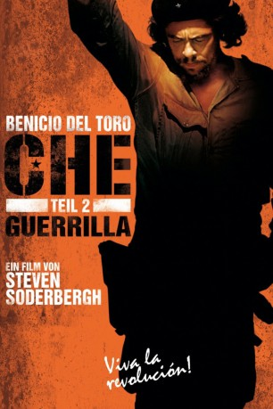
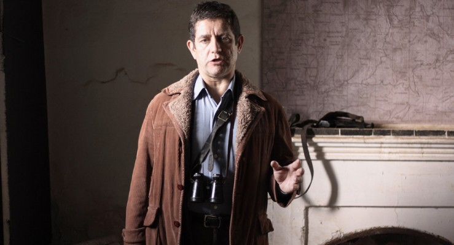

#1323 Che 2 - Guerrilla
Alternativ: Che: Part Two
 
 IMDB-Wertung: 6.9 / 10
IMDB-Wertung: 6.9 / 10  Metascore: 64
Metascore: 64 
1965 verschwindet Ernesto „Che“ Guevara, Minister im kommunistischen Kuba nach Castros Revolution, ohne eine Spur zu hinterlassen. Ein halbes Jahr später verliest Fidel Castro eine Erklärung: Guevara tritt von seinen Posten ab und gibt auch die kubanische Staatsangehörigkeit auf. Che ist unter falschem Namen nach Bolivien gegangen, um dort die südamerikanische Revolution zu etablieren. Mit Kämpfern und Waffen heimlich von Kuba unterstützt, soll er revolutionäre Trainingscamps aufbauen und die Bevölkerung für den Kampf gegen die staatliche Unterdrückung gewinnen. Doch die arme Bauernbevölkerung ist gleichgültig; streikende Bergarbeiter werden kurzerhand vom Militär massakriert; die kommunistische Partei Boliviens will mit bewaffnetem Kampf nichts zu tun haben. So steht Che bald mit ein paar Kämpfern alleine da, in den bolivianischen Bergwäldern, und wird vom offiziellen Militär gejagt, das von Spezialisten der CIA ausgebildet wurden.
Jahr: 2008
Dauer: 135 Minuten
FSK: 12
Land: Spanien Studio: UFATonspuren:
Untertitel: Deutsch,
Auflösung: 1080p (1920x1080) Größe: 9144 MB
Genre: Biographie, Drama, Geschichte, Krieg
Regisseur:  Steven Soderbergh
Steven Soderbergh
Drehbuch: Peter Buchman, Benjamin A. van der Veen, Ernesto 'Che' Guevara
Soundtrack: Alberto Iglesias
Darsteller:
- Demian Bichir als Fidel Castro
 Rodrigo Santoro als Raúl Castro
Rodrigo Santoro als Raúl Castro Benicio Del Toro als Ernesto Che Guevara
Benicio Del Toro als Ernesto Che Guevara Catalina Sandino Moreno als Aleida March
Catalina Sandino Moreno als Aleida March Franka Potente als Tania, Haydee Tamara Bunke Bider
Franka Potente als Tania, Haydee Tamara Bunke Bider- Norman Santiago als Tuma, Carlos Coello
 Joaquim de Almeida als President René Barrientos
Joaquim de Almeida als President René Barrientos- Rubén Ochandiano als Rolando, Eliseo Reyes Rodriguez
- Carlos Acosta-Milian als Antonio Domínguez Flores
 Armando Riesco als Benigno, Dariel Alarcón Ramirez
Armando Riesco als Benigno, Dariel Alarcón Ramirez Lou Diamond Phillips als Mario Monje
Lou Diamond Phillips als Mario Monje- Marisé Alvarez als Vilma Espín
- Marc-André Grondin als Régis Debray
 Carlos Bardem als Moisés Guevara
Carlos Bardem als Moisés Guevara Eduard Fernández als Ciro Algarañaz
Eduard Fernández als Ciro Algarañaz Antonio de la Torre als Lieutenant Carlos Fernández
Antonio de la Torre als Lieutenant Carlos Fernández- Luis Bredow als Honorato Rojas
 Óscar Jaenada als Darío, David Ardiazola
Óscar Jaenada als Darío, David Ardiazola- Gastón Pauls als Ciro Bustos
 Juan Carlos Vellido als Major Hernán Plata
Juan Carlos Vellido als Major Hernán Plata Yul Vazquez als Alejandro Ramírez
Yul Vazquez als Alejandro Ramírez Jordi Mollà als Captain Mario Vargas
Jordi Mollà als Captain Mario Vargas James D. Dever als Major Ralph 'Pappy' Shelton
James D. Dever als Major Ralph 'Pappy' Shelton Luis Callejo als Bolivian Interrogator
Luis Callejo als Bolivian Interrogator Matt Damon als Fr. Schwartz
Matt Damon als Fr. Schwartz-  Pedro Casablanc als Colonel Joaquín Zenteno
- Enrique Arce als Lieutenant Carlos Pérez
 Benjamín Benítez als Rudolfo , uncredited
Benjamín Benítez als Rudolfo , uncredited- Jason Rivera als Un delegate , uncredited
 Uzimann als Indian Diplomat , uncredited
Uzimann als Indian Diplomat , uncredited- María D. Sosa als Aleidita
- Raúl Beltrán als Bolivian Customs Agent #1
- Raúl 'Pitín' Gómez als Bolivian Customs Agent #2
- Paty M. Bellott als Woman at Airport
- Othello Rensoli als Pombo, Harry Villegas Tamayo
- Pablo Durán als Pacho, Alberto Fernández Montes de Oca
- Ezequiel Díaz als Loro, Jorge Vázquez Viaña
- Juan Salinas als Polo, Apolinar Aquino Quispe
- Luis Muñoz als Serapio Aquino Tudela
- Lorenzo Ariel Muñoz als Camba, Orlando Jiménez Baznán
- Antonio Peredo als Coco, Roberto Peredo Liegue
- Aarón Vega als Ricardo, José María Martínez Tamayo
- Giraldo Moisés als Braulio, Israel Reyes Zayas
- Jorge Perugorría als Joaquin, Juan Vitalo 'Vilo' Acuña
- Néstor Rodulfo als Miguel, Manuel Hernández Osorio
- Kahlil Mendez als Urbano, Leonardo Tamayo Núñez
- Cristian Mercado als Inti, Guido Peredo Liegue
- Roberto Guilhon als Ernesto, Freddie Maymura Hurtado
- Edgardo Rodríguez als Arturo, René Martínez Tamayo
- José Juan Rodríguez als Moro, Octavio de la Concepción y de la Pedraja
Datei: X:\2-Dilogie(A-F)\Che\Che 2 - Guerrilla (2008, FSK12, 1920x1080).mkv seit 22.06.2015
Festplatte: HD Collection-2(A-Z)-3(A-M)
 Alle Filme aus Gruppe '2-Dilogie(A-F)\Che'
Alle Filme aus Gruppe '2-Dilogie(A-F)\Che'